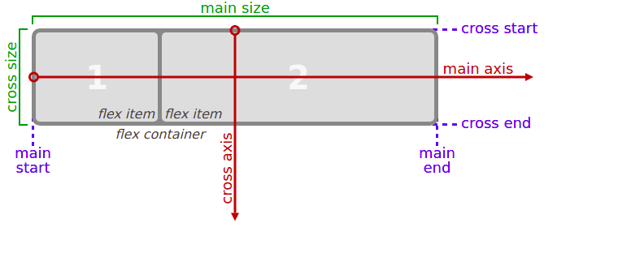

Education must also train one for quick, resolute and effective thinking.

Prism highlighter is a very powerful thing. In this article I'm going to show you what you can actually do with it, some tricks and tips while editing your post. Tocs is also enabled as you can see in summary.
Summary
Memoirs theme has Prism highlighter integrated. I will show you in this post a few examples of how it looks if you are a developer planning to add pieces of code on your website.
Resonspive Design with Media Queries
Media Queries are a new technique introduced in CSS3 that change the presentation of content based on different viewport sizes. The viewport is a user’s visible area of a web page, and is different depending on the device used to access the site.
Media Queries consist of a media type, and if that media type matches the type of device the document is displayed on, the styles are applied. You can have as many selectors and styles inside your media query as you want.
Here’s an example of a media query that returns the content when the device’s width is less than or equal to 100px:
@media (max-width: 100px) { /* CSS Rules */ }
and the following media query returns the content when the device’s height is more than or equal to 350px:
@media (min-height: 350px) { /* CSS Rules */ }
Remember, the CSS inside the media query is applied only if the media type matches that of the device being used.
Responsive Image
Making images responsive with CSS is actually very simple. You just need to add these properties to an image:
img {
max-width: 100%;
height: auto;
}
The max-width of 100% will make sure the image is never wider than the container it is in, and the height of auto will make the image keep its original aspect ratio.
Responsive Typography
Make Typography ResponsivePassed Instead of using em or px to size text, you can use viewport units for responsive typography. Viewport units, like percentages, are relative units, but they are based off different items. Viewport units are relative to the viewport dimensions (width or height) of a device, and percentages are relative to the size of the parent container element.
The four different viewport units are:
- vw (viewport width): 10vw would be 10% of the viewport’s width.
- vh (viewport height): 3vh would be 3% of the viewport’s height.
- vmin (viewport minimum): 70vmin would be 70% of the viewport’s smaller dimension (height or width).
- vmax (viewport maximum): 100vmax would be 100% of the viewport’s bigger dimension (height or width). Here is an example that sets a body tag to 30% of the viewport’s width.
ems and rems
ems update the size of an element relative to the size of the parent element.
rems update the size of an element with respect to root element, which is either the html or :: root element.
body { width: 30vw; }
CSS Flexbox
Placing the CSS property display: flex; on an element allows you to use other flex properties to build a responsive page.
Adding display: flex to an element turns it into a flex container. This makes it possible to align any children of that element into rows or columns. You do this by adding the flex-direction property to the parent item and setting it to row or column. Creating a row will align the children horizontally, and creating a column will align the children vertically.
Other options for flex-direction are row-reverse, column and column-reverse. Setting a flex container as a row places the flex items side-by-side from left-to-right.
A flex container set as a column places the flex items in a vertical stack from top-to-bottom. For each, the direction the flex items are arranged is called the main axis. For a row, this is a horizontal line that cuts through each item. And for a column, the main axis is a vertical line through the items.

There are several options for how to space the flex items along the line that is the main axis. One of the most commonly used is justify-content: center;, which aligns all the flex items to the center inside the flex container.
justify-content aligns flex items inside the flex container horizontally across the main axis. align-items aligns flex items inside the flex container vertically, from top to bottom.
Flex properties
- flex-start: aligns items to the start of the flex container. For a row, this pushes the items to the left of the container. For a column, this pushes the items to the top of the container. This is the default alignment if no justify-content is specified.
- flex-end: aligns items to the end of the flex container. For a row, this pushes the items to the right of the container. For a column, this pushes the items to the bottom of the container.
- space-between: aligns items to the center of the main axis, with extra space placed between the items. The first and last items are pushed to the very edge of the flex container. For example, in a row the first item is against the left side of the container, the last item is against the right side of the container, then the remaining space is distributed evenly among the other items.
- space-around: similar to space-between but the first and last items are not locked to the edges of the container, the space is distributed around all the items with a half space on either end of the flex container. space-evenly: Distributes space evenly between the flex items with a full space at either end of the flex container
- center: align items to the center. For rows, this vertically aligns items (equal space above and below the items). For columns, this horizontally aligns them (equal space to the left and right of the items).
- stretch: stretch the items to fill the flex container. For example, rows items are stretched to fill the flex container top-to-bottom. This is the default value if no align-items value is specified.
- baseline: align items to their baselines. Baseline is a text concept, think of it as the line that the letters sit on.
flex-wrap property tells CSS to wrap items. This means extra items move into a new row or column. The break point of where the wrapping happens depends on the size of the items and the size of the container. flex-wrap properties include nowrap, wrap, wrap-reverse.
The flex-shrink property takes numbers as values. The higher the number, the more it will shrink compared to the other items in the container. For example, if one item has a flex-shrink value of 1 and the other has a flex-shrink value of 3, the one with the value of 3 will shrink three times as much as the other.
The opposite of the flex-shrink is flex-grow.
Grid-Properties
Turn any HTML element into a grid container by setting its display property to grid. This gives you the ability to use all the other properties associated with CSS Grid.
Simply creating a grid element doesn’t get you very far. You need to define the structure of the grid as well. To add some columns to the grid, use the grid-template-columns property on a grid container as demonstrated below:
.container {
display: grid;
grid-template-columns: 50px 50px;
}
grid-template-columns create the structues from top-to-bottom.
To adjust the rows manually, use the grid-template-rows property in the same way you used grid-template-columns in the previous challenge.
grid-column-gap creates a gap between the elements vice versa grip-row-gap
grid-gap is a shorthand property for grid-row-gap and grid-column-gap
To control the number of columns an item will consume, you can use the grid-column property in conjunction with the line numbers you want the item to start and stop at.
Here’s an example:
grid-column: 1 / 3;
This will make the item start at the first vertical(this will move it across from left to right) line of the grid on the left and span to the 3rd line of the grid, consuming two columns vice versa grid-row.
In CSS Grid, the content of each item is located in a box which is referred to as a cell. You can align the content’s position within its cell horizontally using the justify-self property on a grid item. By default, this property has a value of stretch, which will make the content fill the whole width of the cell. This CSS Grid property accepts other values as well:
start: aligns the content at the left of the cell,
center: aligns the content in the center of the cell,
end: aligns the content at the right of the cell.
align-self: aligns the content from top to bottom in the cell.
Using justify-items on the parent container aligns all children items in one direction
You can group cells of your grid together into an area and give the area a custom name. Do this by using grid-template-areas on the container like this:
.container {
font-size: 40px;
min-height: 300px;
width: 100%;
background: LightGray;
display: grid;
grid-template-columns: 1fr 1fr 1fr;
grid-template-rows: 1fr 1fr 1fr;
grid-gap: 10px;
grid-template-areas:
"header header header"
"advert content content"
"footer footer footer";
}
The code above groups the cells of the grid into four areas; header, advert, content, and footer. Every word represents a cell and every pair of quotation marks represent a row.
After creating an area template for your grid container, as shown in the previous challenge, you can place an item in your custom area by referencing the name you gave it. To do this, you use the grid-area property on an item like this:
.item1 {
grid-area: header;
}
This lets the grid know that you want the item1 class to go in the area named header. In this case, the item will use the entire top row because that whole row is named as the header area.
The grid-area property you learned in the last challenge can be used in another way. If your grid doesn’t have an areas template to reference, you can create an area on the fly for an item to be placed like this:
item1 { grid-area: 1/1/2/4; }
This is using the line numbers you learned about earlier to define where the area for this item will be. The numbers in the example above represent these values:
grid-area: horizontal line to start at / vertical line to start at / horizontal line to end at / vertical line to end at; So the item in the example will consume the rows between lines 1 and 2, and the columns between lines 1 and 4
repeat function repeats the number of rows or columns to the specified number.
Here’s an example that would create the 100 row grid, each row at 50px tall.
grid-template-rows: repeat(100, 50px);
or
grid-template-columns: repeat(2, 1fr 50px) 20px;
or
grid-template-columns: 1fr 50px 1fr 50px 20px;
or
grid-template-columns: repeat(3, minmax(90px, 1fr));
There’s another built-in function to use with grid-template-columns and grid-template-rows called minmax. It’s used to limit the size of items when the grid container changes size. To do this you need to specify the acceptable size range for your item.
Here is an example:
grid-template-columns: 100px minmax(50px, 200px);
The repeat function comes with an option called auto-fill. This allows you to automatically insert as many rows or columns of your desired size as possible depending on the size of the container. You can create flexible layouts when combining auto-fill with minmax, like this:
repeat(auto-fill, minmax(60px, 1fr));
When the container changes size, this setup keeps inserting 60px columns and stretching them until it can insert another one. Note: If your container can’t fit all your items on one row, it will move them down to a new one.
auto-fit works almost identically to auto-fill. The only difference is that when the container’s size exceeds the size of all the items combined, auto-fill keeps inserting empty rows or columns and pushes your items to the side, while auto-fit collapses those empty rows or columns and stretches your items to fit the size of the container.
Note: If your container can’t fit all your items on one row, it will move them down to a new one.
In the second grid, use auto-fit with repeat to fill the grid with columns that have a minimum width of 60px and maximum of 1fr. Then resize the preview to see the difference.
Media Screens
/*
##Device = Desktops
##Screen = 1281px to higher resolution desktops
*/
@media (min-width: 1281px) {
/* CSS */
}
/*
##Device = Laptops, Desktops
##Screen = B/w 1025px to 1280px
*/
@media (min-width: 1025px) and (max-width: 1280px) {
/* CSS */
}
/*
##Device = Tablets, Ipads (portrait)
##Screen = B/w 768px to 1024px
*/
@media (min-width: 768px) and (max-width: 1024px) {
/* CSS */
}
/*
##Device = Tablets, Ipads (landscape)
##Screen = B/w 768px to 1024px
*/
@media (min-width: 768px) and (max-width: 1024px) and (orientation: landscape) {
/* CSS */
}
/*
##Device = Low Resolution Tablets, Mobiles (Landscape)
##Screen = B/w 481px to 767px
*/
@media (min-width: 481px) and (max-width: 767px) {
/* CSS */
}
/*
##Device = Most of the Smartphones Mobiles (Portrait)
##Screen = B/w 320px to 479px
*/
@media (min-width: 320px) and (max-width: 480px) {
/* CSS */
}
Explore more like this
Education must also train one for quick, resolute and effective thinking.
Memoirs theme has Prism highlighter integrated. I will show you in this post a few examples of how it looks if you are a developer planning to add pieces of...
Education must also train one for quick, resolute and effective thinking.
Memoirs theme has Prism highlighter integrated. I will show you in this post a few examples of how it looks if you are a developer planning to add pieces of...
Comments